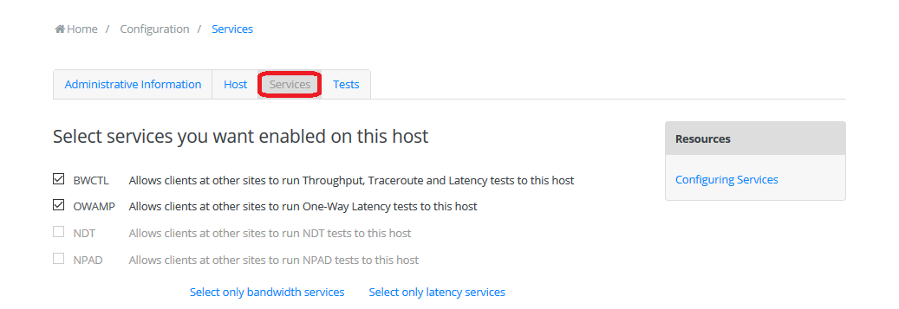

The perfSONAR Toolkit runs a number of services: applications constantly listening for requests to perform measurements, retrieve data and execute other tasks. This page details how and when to enable/disable services through the web interface.
The following services are listed under Services list in the main page and may be managed through the web interface:
| Name | Default Enabled | Description |
|---|---|---|
| Automatic Updates | Yes | Controls yum-cron service that updates packages on the host nightly. See Updating the Toolkit for more details. |
| bwctl | Yes | Controls bwctl-server service that allows clients at other sites to run throughput, traceroute and ping tests to your host. Also required if you plan to run regular tests of the aforementioned types on your host. |
| owamp | Yes | Controls owamp-server service that allows clients at other sites to run one-way latency tests to this host. Also required to run regular one-way delay tests on your host. |
Note
Starting with 4.0 release, new installs on all supported operating systems do not get NDT and the Web100 kernel by default.
The following services are listed under Services list in the main page but cannot be managed directly through the web interface. To start/stop them use systemctl start|stop and to enable/disable them, use systemctl enable|disable from command line. Please note that disabling these services may negatively impact running toolkit installation.:
| Name | Default Enabled | Description |
|---|---|---|
| esmond | Yes | Controls esmond service that keeps data in measurement archive. |
| lsregistration | Yes | Controls perfsonar-lsregistrationdaemon service that allows host to register records in the Lookup Service. |
| meshconfig-agent | Yes | Controls perfsonar-meshconfig-agent service that coordinates various test definitions and manages them in pscheduler. |
| pscheduler | Yes | Controls pscheduler-scheduler service that is used for the scheduling and supervision of automated measurements and sending the results off for storage. |
It is important to understand what services might impact other services. For example, if you run throughput tests (e.g. bwctl/pscheduler + iperf3) and latency/loss tests (e.g. owamp ) on the same network interface, the throughput tests will possibly cause the host to drop packets. This may lead to a misleading interpretation of data if these events are not properly correlated. In general it is recommended you use the following guidelines when deciding which services to enable:
See also
For a discussion on when to run Automatic Updates see Automatic Updates
Click on Enable/disable services in the main page Services section header. You may also click Configure in the the right-upper corner of the main page and then go to Services tab.
Login using the web administrator username and password.
See also
See Managing Users for more details on creating a web administrator account
A list of services available for managed through the web interface and a description of each is provided on the screen that loads.

Check the services you wish to enable and uncheck the services you wish to disable. Alternatively, you may use the Select only bandwidth services and Select only latency services to enable only tests related to throughput and one-way delay testing, respectively. Click Save to apply your changes.
After that you should see a green message indicating the services have been successfully restarted and the new configuration has been applied.
After changing service status you will now see status change under Services list in the main page of the web interface:
Note
You may also enable/disable any of the underlying services with the systemctl enable|disable command and the changes will be reflected in the GUI and maintained on reboot.